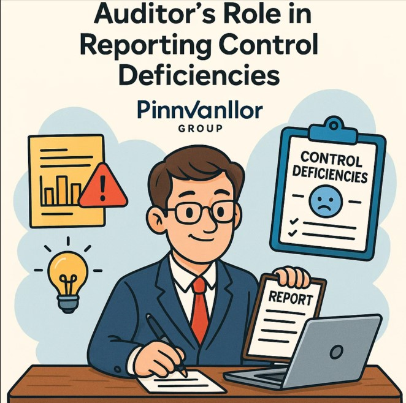

Auditing Standards play a critical role in ensuring transparency and accountability in financial reporting. One such important standard is SA 265 – Communicating Deficiencies in Internal Control to Those Charged with Governance and Management. This standard lays down the responsibilities of the auditor in identifying and reporting any control weaknesses that may have an impact on the financial statements. Let’s dive deeper into its requirements and relevance.
Ever wondered how auditors turn internal control gaps into powerful governance insights?
A well-reported deficiency today can prevent a major breakdown tomorrow. SA 265 is about foresight, not fault-finding.
What is SA 265?
SA 265 provides guidelines on how auditors should communicate significant deficiencies and material weaknesses in internal control systems identified during an audit. These communications help management and those charged with governance to address control issues and improve the reliability of future financial reporting.
Key Objectives of SA 265
- Identify Deficiencies: Recognize any weakness in internal control during audit procedures.
- Classify Deficiencies: Distinguish between significant deficiencies and material weaknesses.
- Communication: Communicate these issues in writing to appropriate authorities.
- Improve Controls: Help management in improving internal control systems for future periods.
Types of Internal Control Deficiencies
1. Deficiency in Internal Control
This occurs when a control necessary to prevent or detect misstatement is missing or not functioning properly.
2. Significant Deficiency
A deficiency, or combination of deficiencies, less severe than a material weakness yet important enough to merit attention by those charged with governance.
3. Material Weakness
A deficiency, or combination of deficiencies, that result in a reasonable possibility that material misstatement of the financial statements will not be prevented or detected in time.
Auditor's Responsibilities Under SA 265
- Understand entity’s internal control relevant to audit.
- Identify control weaknesses during audit testing.
- Evaluate severity and potential impact of each deficiency discovered.
- Document findings and evaluate if they amount to significant deficiencies or material weaknesses.
- Communicate these findings to management and those charged with governance in written form.
Communication Requirements
The standard requires that the auditor must:
- Communicate significant deficiencies in written form to those charged with governance.
- State clearly that the purpose of audit is not to express opinion on effectiveness of internal control.
- Describe each deficiency and its potential effects clearly.
- Provide appropriate context and any recommendations if possible (though not mandatory).
Format of Written Communication
- Title: Clearly identified as “Communication of Significant Deficiencies in Internal Control”.
- Address: To appropriate level of management / those charged with governance.
- Purpose: Mention that audit was planned to express opinion on financial statements.
- Findings: List of identified deficiencies with description and context.
- Limitations: State that there could be additional deficiencies not identified.
- Signature: Signed by the auditor / audit firm.
Importance of SA 265 in Practice
SA 265 promotes transparency and accountability within organizations. By formal communication of deficiencies, it enhances the entity’s control environment and encourages proactive corrective measures. This standard helps in safeguarding assets, minimizing fraud risks, and improving operational efficiency.
Conclusion
To conclude, SA 265 is not merely a compliance requirement but a vital tool for strengthening the internal control system of an organization. It alerts management to potential risks and fosters better governance practices. Understanding and implementing SA 265 effectively helps auditors protect the interests of stakeholders by ensuring that control deficiencies do not undermine the credibility of financial reporting.
Takeaway for Professionals
- Identify, classify, and communicate control weaknesses timely.
- Ensure professionalism in written reporting.
- Use SA 265 as a constructive tool to improve governance, not as a fault-finding exercise.